Frequenescence
Illuminated Augmented Reality Experience
As I grew as a musician, I realized that the next step for music of any kind would include an important visual element. 3D projection mapping has sprung up in a lot of work by a lot of very famous artists, and this sparked my interest. Since then, I have started to use Touch Designer in unison with Pure Data to begin composing (visually and aurally) an epic piece worthy of my senior project. It turned into a sound art installation titled Frequenescence (frequency + luminescence), as it is a study of the perception of light.
A fellow student and I wanted to study the human perception of light using sound and 3D projection mapping. Initially, we ran with the idea of light worship, and donned it "the Altar of Light." While we have kept a few of the basic ideas behind that, we wanted to make it more grand than just one topic. We created the idea for an object (in simple terms, four boxes stacked on each other) to project onto. The sound will dicate the projected visuals, but photoresistors that measure light intensity of the surrounding environment will feed their input right back into the sound patch, and alter it slightly, creating a loop effect.
Compositionally speaking, four separate distinctions of the day make up our entire projects lifespan (though no two performances will be the same due to a natural randomness built into the composition). We have a built in ability to give the composition a specified time length, so it can run in a number of settings in terms of venue. We also have interactive elements, such as pressure pads, that when stepped on, trigger things within both patches (visual and aural).
With the visual patch, there are 4 separate "portions" that highlight the different times of day, and these portions will be contained by each separate box (and using 3D mapping, we will give these images depth. There behavior will be different depending on which sector of the object they're currently in. I want to create the illusion of depth within the object, and also make the object appear as if it can perform impossible movements. I will match these to the audio patch via messages sent over a local network, creating a visual and aural harmony meant to wow the audience. More information can be found on our blog here. The blog will have more information as our project takes a more definite form in mid-March.
We outline additional information in regards to the concept in this proposal.
Screenshots and sound bite:
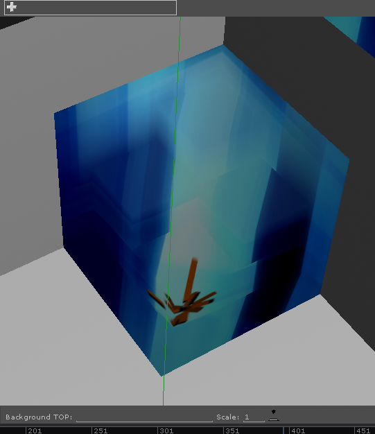Highlight of the image corrections made to fit the 3D surface
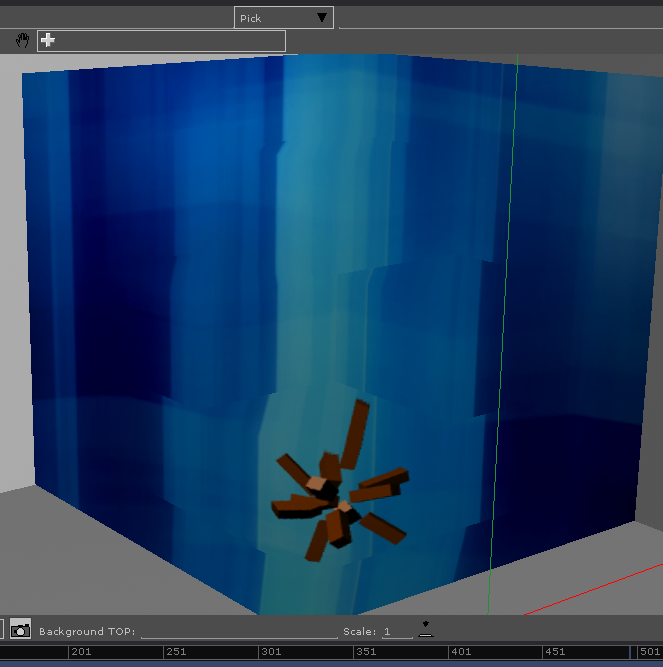Straight ahead view of the object
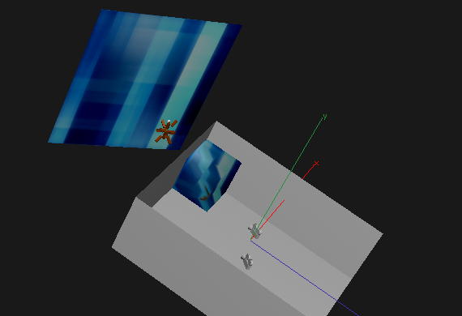Overlooking the environment
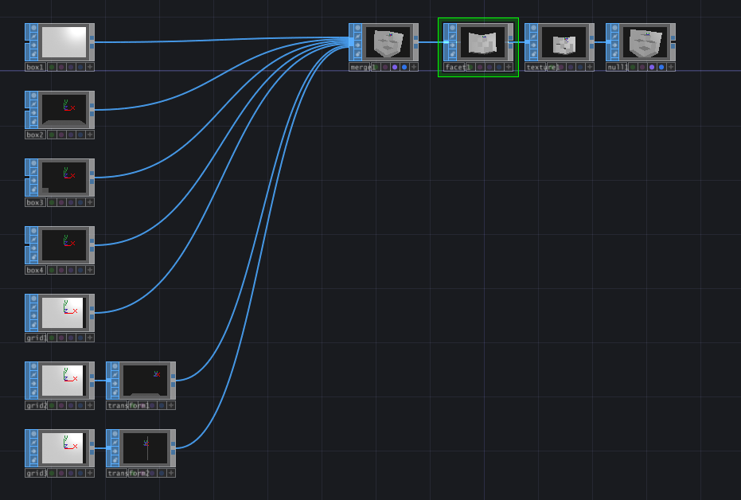Network to create the 3D object
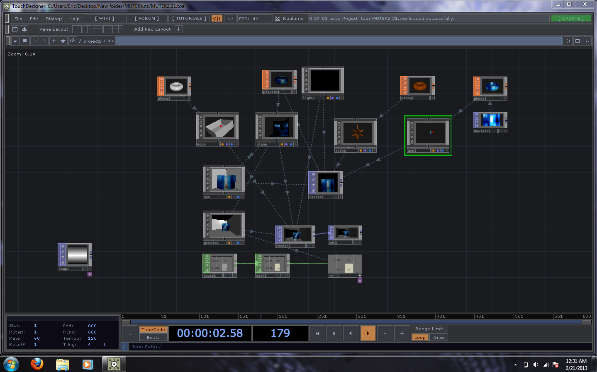First level of the network
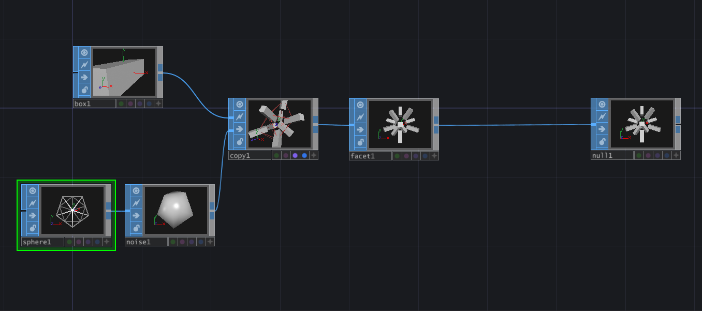A geometry network (current one shown in the other pictures)
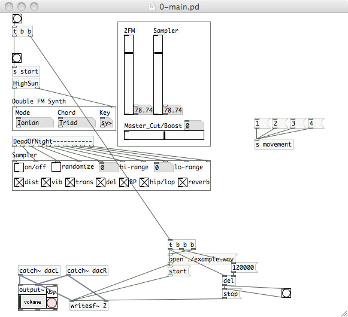Front end patch for audio
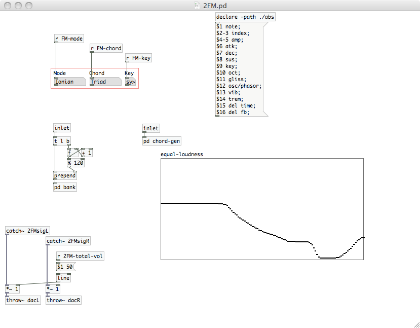Double FM instrument
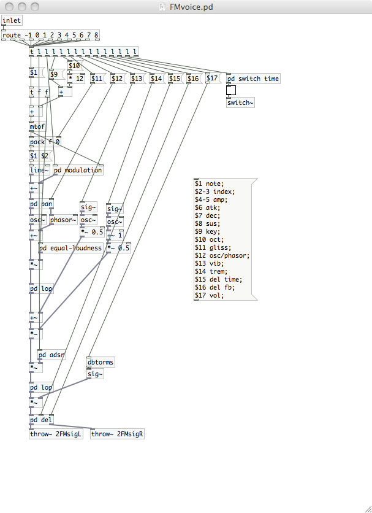Double FM voice
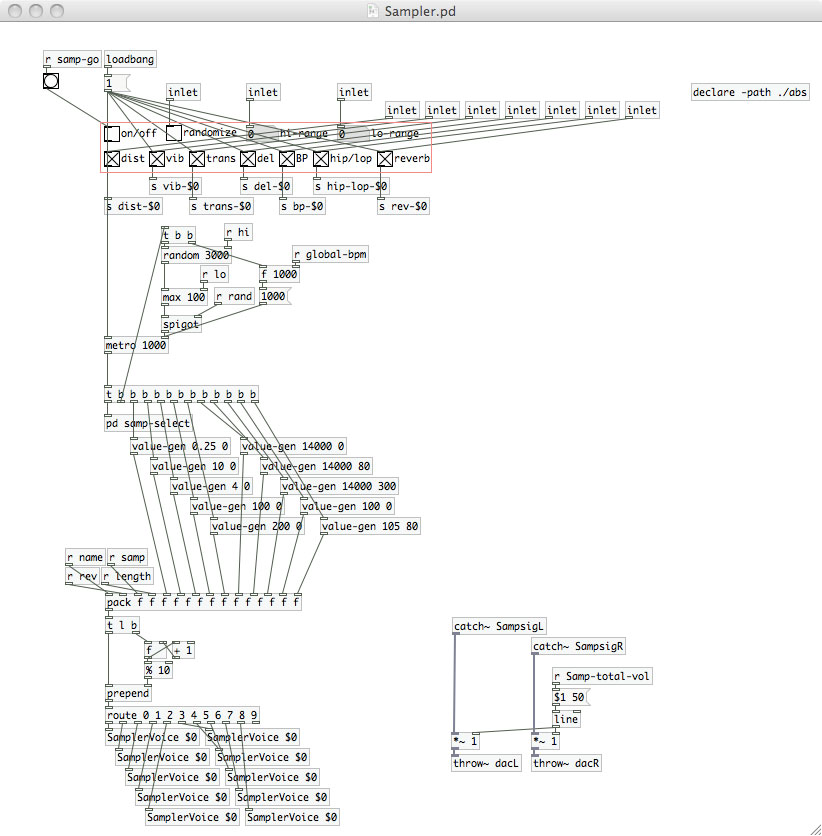Sampler instrument
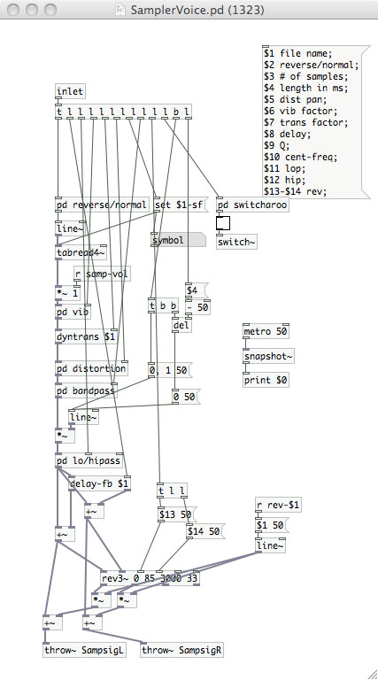Sampler voice
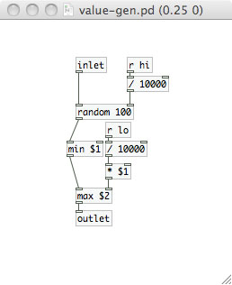Value Randomizer for the sampler
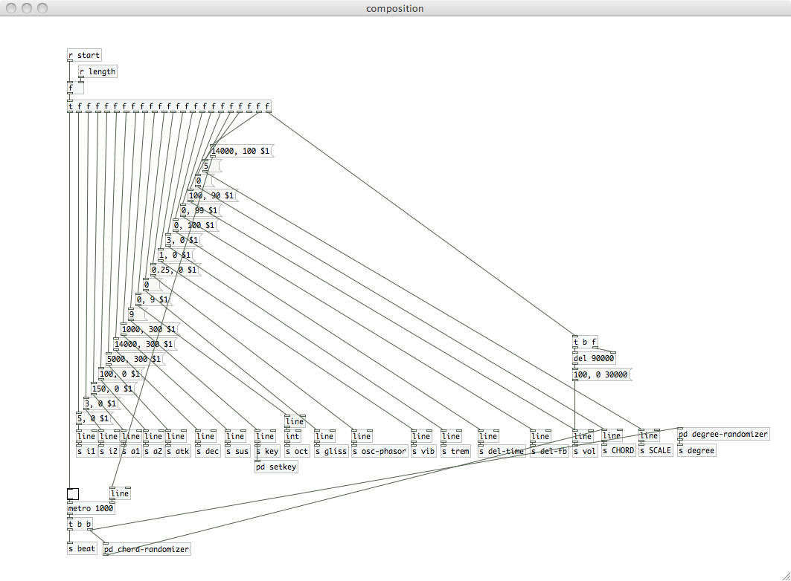Message center for the "dawn" section of the piece
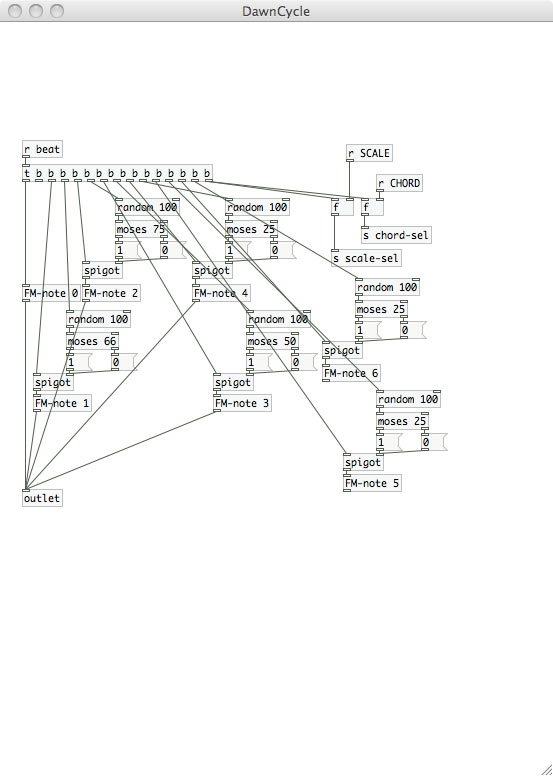Weighted chord/note randomizer for the double FM instrument during dawn